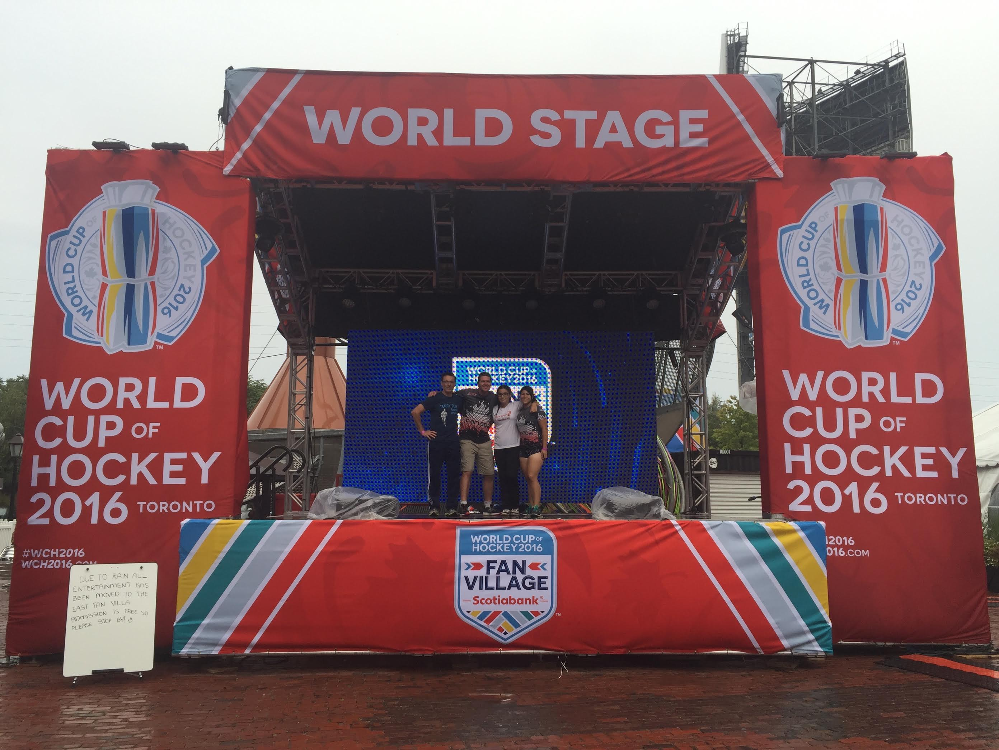
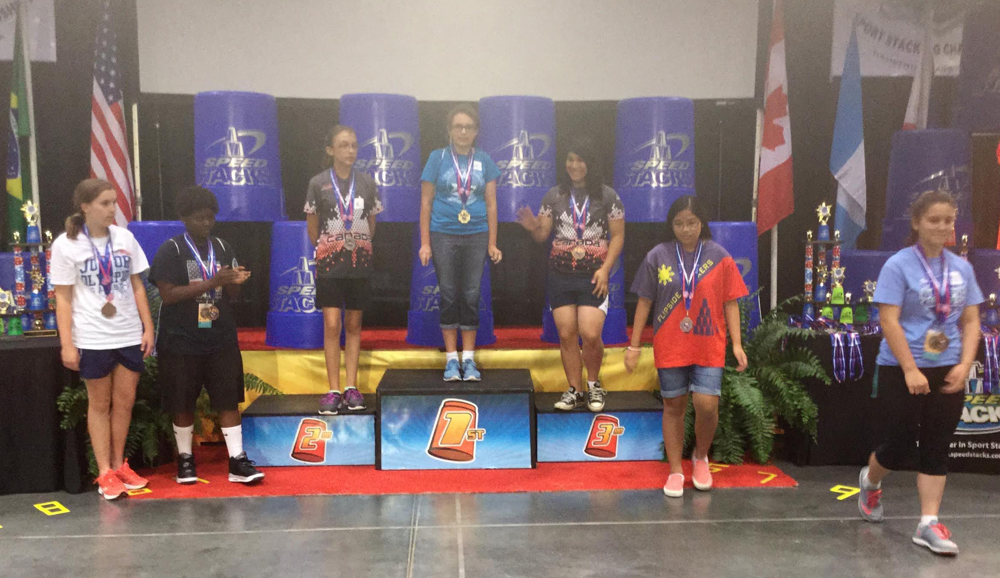
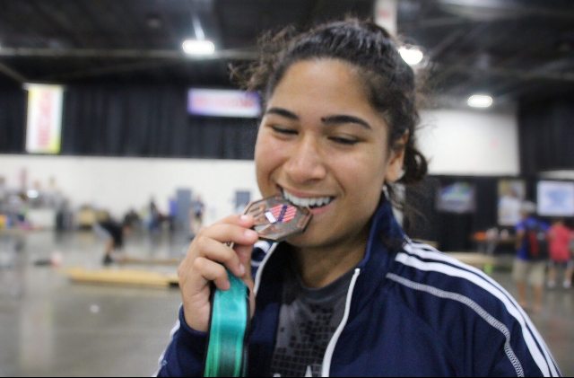

Sport Stacking |
|||||||||||||||||||||||||||||
|---|---|---|---|---|---|---|---|---|---|---|---|---|---|---|---|---|---|---|---|---|---|---|---|---|---|---|---|---|---|
What Is Sport Stacking? |
|||||||||||||||||||||||||||||
Sport stacking is growing phenomenon in north america and Canada in particular. In the last 5 years the sport stacking community in Canada has grown exponentially and is continuing to grow and become more competitive year by year. In 2013, when I started cup stacking we had team Canada representing our country in competitions such as Junior Olympics and World Championships. Now we have 3 levels of potential Canadian teams to compete on. Team Ontario/Quebec (depending on where you live), Team Canada, and Team Canada Elite. As you move up teams, your cup stacking becomes more and more competitive. Cup Stacking has given me amazing opportunities to experience pheonominal things such as the Junior Olympics themselves, participating in the World Chapionships, running cup stacking birthday parties, and even got to "preform" at the Worl Hockey Championships in 2016. |
 | ||||||||||||||||||||||||||||
How Do I Tie Into This??? |
|||||||||||||||||||||||||||||
My First Year |
|||||||||||||||||||||||||||||
|  | I am currently a part of Team Canada Elite for cup stacking, but I definitely didn’t start at this point. In 2013, after over a year of rigorous training in my kitchen, and being consumed by the endless clatter of cups, I finally had my chance to qualify for the Junior Olympics and to achieve my dream of being on Team Canada at the “Battle of the Schools” local tournament. Shortly after that tournament I had gotten a letter in the mail inviting me to represent Canada at the 2013 Junior Olympics. I can honestly say that that was one of the best days of my entire life. My school cup stacking coach -and my favourite teacher ever (sorry Mr. Q)- even came all the way to Detroit to watch me compete and to support me. |
||||||||||||||||||||||||||||
My Best Year |
|||||||||||||||||||||||||||||
My cup stacking career immediately took off from there and before I knew it I was invited to compete in the World Championships in 2015 (which is kind of a HUGE deal). After World’s I was thrown right back into the Junior Olympics where I qualified to be a part of the first ever Stack Out (shown in the video below). I compete from 3:21-8:45, and let’s just say that I definitely made cup stacking history for this competition. |
|||||||||||||||||||||||||||||
My Career Standings |
|||||||||||||||||||||||||||||
|
 | ||||||||||||||||||||||||||||
To be reminded about who and I and what I'm all about, click here. To learn all about what cosplaying is and how I got into cosplay, click here. |
|||||||||||||||||||||||||||||